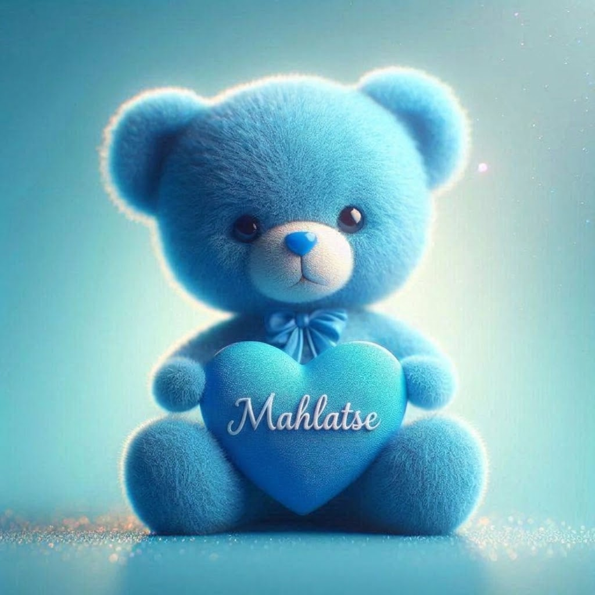
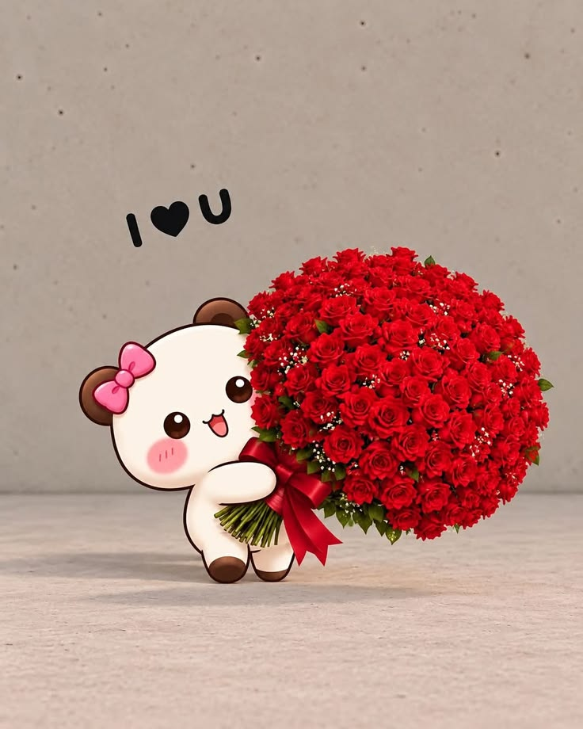

From me👇👇

JUST FOR YOU ♡
To My Favourite Person,
A little piece of my heart.
I have so many things I'd love to tell you, yet somehow, whenever I try to put them into words, they never seem quite enough.
First, I hope you know how incredibly special you are to me.
You're beautiful, Brilli. And I'm not referring merely to your appearance, although goodness knows you drive me crazy sometimes❤️🔥. There's so much more to you that I find myself admiring: Your intelligence, your personality, your individuality, and the way you embrace being yourself. I love that you don't feel the need to be perfect. I wouldn't want you to be anyone other than who you are.
I wish you could see yourself through my eyes sometimes. Perhaps then you'd understand just how much I adore the person you are.
I know our story hasn't been particularly long, and perhaps we haven't collected as many memories as we'd have liked. There are moments I wish I'd made more time for, conversations I wish we'd had, and experiences I wish we could look back on together. Sometimes I feel I could have done better, and I acknowledge that.🥺
But please don't mistake the things I haven't managed to do for a lack of genuine affection.
You mean a lot to me. More than I sometimes know how to communicate.
I know things will change. I'll be leaving school, nd we'll have different environments, different responsibilities, and perhaps fewer opportunities to see each other. I understand that uncertainty can be uncomfortable, especially when you don't know what to expect.
But I don't want you to think that leaving means I'm looking for someone to replace you, or that everything we've shared suddenly becomes insignificant.
You're not someone I'm simply passing time with. You're someone I've grown fond of, someone I care about, and someone whose presence has become a meaningful part of my life.❣️
I cannot predict every circumstance that the future might bring, but I can tell you that my feelings for you are genuine. I don't want you to feel that you have to compete with anyone to deserve my affection.🫶💘
And please, never feel that you need to become someone else to be enough for me. You're already enough as yourself. Your imperfections don't diminish your worth, and you don't need to earn the affection you deserve.
I know I'm not without my shortcomings. Sometimes I struggle to express myself, sometimes I don't get things right, and sometimes I feel like I'm falling short of the person I'd like to be for you. I'm working on that, not because I expect perfection from myself, but because I want to become better at showing the people I care about that they matter.
I wish I had something extraordinary to give you, something beautiful that you could hold onto and remember me by. But I don't have much in the way of material things.
So I made this instead.
Every little detail, every word, and every bit of effort behind this website is my attempt at giving you something personal. Something that exists beyond an ordinary conversation or a passing moment.
Whenever you revisit this little corner of the internet, I hope it reminds you that someone thought you were worth taking the time to create something for.
I hope life gives you beautiful opportunities, that you accomplish the things you dream of, that you continue growing into the person you aspire to become, and that you never lose the qualities that make you Mii Brilli..💝💌
And if there's one thing I'd really like you to remember, it's this:
You are worthy of love, even as you continue to grow. Never feel pressured to become someone else to be valued. Keep embracing who you are, keep learning, keep growing, and never stop becoming the person God created you to be.
I'm genuinely glad I got to know you, Hlalefo.
Thank you for being part of my story.
With lots of affection,💗💖🫂
Forever Yours 💐🌹
♡
(｡♡‿♡｡)
😘😘😘😘
